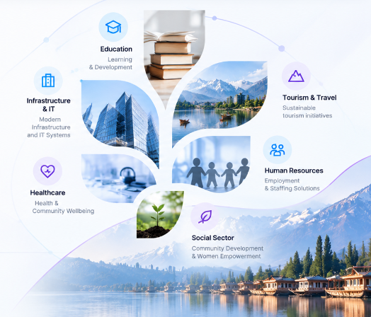

Emersonfort
Srinagar, J&K
JAMMU & KASHMIR • MULTI-SECTOR ENTERPRISE
Empowering
Multi-Sector Growth &
Technical Solutions
Emersonfort Technologies (OPC) Private Limited integrates infrastructure, modern IT systems, educational excellence and community empowerment across diverse sectors.
J&K
REGISTERED
COMPLIANT
WITH APPLICABLE LAWS
MULTI-SECTOR
ENTERPRISE

Core Divisions
Our Nine Core Business Verticals
Incorporated under Clause 3(a) of the Memorandum of Association, Emersonfort Technologies manages integrated operations across infrastructure, social impact, and digital services.
SEC-01
Education Services
Comprehensive educational management, institutional partnerships, curriculum enrichment, and modern learning infrastructure development.
- Academic Institution Support
- Digital Classroom Enablement
- Educational Program Delivery
SEC-02
Skill Development Services
Practical vocational training, industry-ready technical upskilling, and professional capacity building for youth employment.
- Vocational Training Centers
- Industry Technical Certification
- Employment Readiness Programs
SEC-03
Construction & Civil Engineering
End-to-end civil contracting, structural engineering, site development, commercial facilities, and residential project execution.
- Civil Contracting & Works
- Structural Project Execution
- Site Engineering & Management
SEC-04
Information Technology & IT Management
Enterprise computing solutions, managed IT infrastructure, business systems integration, and day-to-day corporate tech operations.
- Enterprise IT Infrastructure
- Managed Systems & Maintenance
- Digital Operations Management
SEC-05
Tourism & Travel
Promoting Jammu & Kashmir and pan-India destination travel, hospitality coordination, tour operations, and travel logistics.
- Destination Travel Services
- Hospitality & Tour Logistics
- Regional Eco-Tourism Initiatives
SEC-06
Healthcare
Health support programs, medical facility logistics, wellness initiatives, and community healthcare coordination.
- Health Support Management
- Medical Facility Operations
- Wellness & Community Outreach
SEC-07
Forestry
Ecological conservation, sustainable agro-forestry projects, plantation programs, and natural resource stewardship.
- Sustainable Plantation Works
- Agro-Forestry Development
- Natural Resource Conservation
SEC-08
Women Empowerment
Dedicated socio-economic programs, self-help group capacity building, entrepreneurship incubation, and women-led skill centers.
- Skill & Livelihood Workshops
- Micro-Enterprise Incubation
- Community Self-Reliance
SEC-09
Human Resource & Staffing
End-to-end workforce recruitment, talent sourcing, temporary and permanent staffing, and manpower deployment across sectors.
- Technical & Field Staffing
- Workforce Deployment & Payroll
- Statutory Employment Compliance
Corporate Assurance
Built on Accountability & Ground Execution
We operate on professional compliance, direct project management, and regional socio-economic empowerment across all initiatives.
Statutory MOA Authorization
Every business sector is officially recognized and registered under the Ministry of Corporate Affairs, ensuring compliance and legal transparency.
Jammu & Kashmir Roots
Headquartered in Srinagar, we leverage deep regional operational understanding with the capability to execute projects statewide and across India.
Multi-Sector Synergy
Seamless cross-sector capability allows clients to source infrastructure, technical staffing, and IT systems under a single management umbrella.
Social Inclusion & Empowerment
We actively champion gender parity and youth skilling, incorporating community empowerment metrics into our corporate project deliverables.
Ecological Stewardship
Our forestry vertical ensures that civil engineering and tourism developments respect biodiversity, soil conservation, and carbon balance.
Accountable Project Delivery
Clear milestones, transparent communication, and committed delivery schedules eliminate delays and administrative friction.
Project Lifecycle
From Mandate to Ground Execution
A standardized four-stage operational process designed for reliability and governance across every sector.
01
Requirement Discovery
Evaluating scope, regulatory considerations, physical constraints, and socio-economic objectives.
02
Planning & Architecture
Developing resource plans, engineering drawings, curricula, or technical roadmaps.
03
Ground Deployment
Deploying certified teams, executing physical or digital works under supervisory control.
04
Handover & SLA Support
Formal delivery, client validation, operational signoff, and continuous technical support.